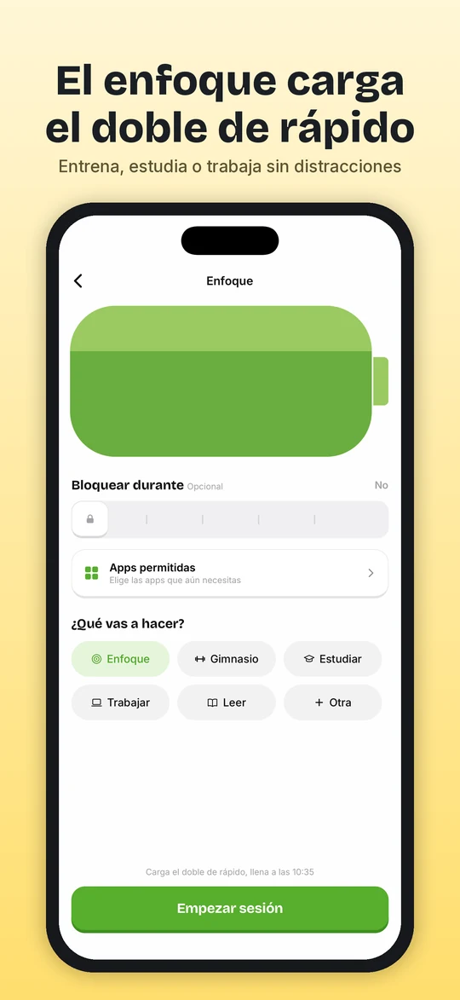

Temporizador de concentración que bloquea apps para estudiar
Un temporizador para estudiar sirve de poco si el móvil no deja de llamarte. Las sesiones de enfoque de ScrollVolt combinan temporizador y bloqueador de apps: las que te distraen siguen bloqueadas hasta que termina la sesión.
Cómo iniciar una sesión de enfoque
- Abre ScrollVolt y toca Enfoque.
- Elige qué vas a hacer: estudiar, gimnasio, trabajar, leer u otra cosa.
- Opcional: decide durante cuánto tiempo se bloquea. Una sesión bloqueada no se puede terminar antes de tiempo.
- Añade las apps permitidas que sí necesitas, como un diccionario o el calendario.
- Toca Empezar sesión y deja el móvil boca abajo.

Por qué funciona para estudiar
Lo más difícil son los primeros diez minutos, cuando cualquier notificación parece más interesante que tus apuntes. Durante una sesión de enfoque, las apps que te distraen siguen bloqueadas, así que «echar un vistazo rápido» deja de ser una opción. Como premio, tu batería de scroll se carga el doble de rápido: después de un buen bloque de estudio puedes hacer scroll sin remordimientos. Prueba con bloques de 25 a 50 minutos y pausas cortas entre medias. En el historial verás cada sesión de enfoque que completes.
Preguntas frecuentes
¿Puedo terminar una sesión antes de tiempo?
Si has fijado un tiempo de bloqueo, no: de eso se trata. Sin tiempo de bloqueo, puedes terminarla tú.
¿Qué apps se bloquean durante la sesión?
Las apps que te distraen siguen bloqueadas durante toda la sesión. Las que marques como permitidas puedes seguir usándolas.
¿Sirve también para entrenar o trabajar?
Sí. Hay sesiones para el gimnasio, el trabajo concentrado y la lectura, y todas cargan tu batería el doble de rápido.
Prueba ScrollVolt en tu iPhone
ScrollVolt Premium es una suscripción anual con 3 días de prueba gratis que puedes cancelar cuando quieras en los ajustes de tu cuenta de Apple. ¿Prefieres pagar una sola vez? También hay un desbloqueo vitalicio.
Descárgalo en elApp Store